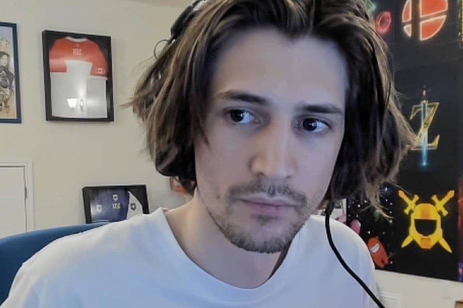

Open beta Overwatch 2 telah rilis selama kurang lebih dua minggu dan memiliki beberapa bagian penting. Overwatch 2 beta berhasil menembus rekor penonton di Twitch hingga 469.000 pemirsa dalam waktu kurang dari dua jam dan mencapai 1,5 juta penonton dalam waktu yang bersamaan. Dalam pekan pembukaan, jumlah penonton berhasil memecahkan rekor sebelumnya di sejarah Overwatch League pada tahun 2018 sebagai musim perdana Liga. Dengan rekor puncak tersebut, terdapat banyak hal yang terjadi pada game tersebut. Sayangnya, satu minggu kemudian Blizzard terpaksa kehilangan hampir 99 persen penontonnya di Twitch.
Performa minggu pertama Overwatch 2 berhasil didobrak oleh streamer terkenal di platform Twitch, seperti xQc, MoonMoon, dan banyak lagi. Streamer tersebut juga mengarah pada motivasi lain yang berpusat di sekitar penurunan akses beta yang akan terjadi selama streaming sehingga pemirsa dapat memanfaatkan insentif tambahan sejak dini. Namun, tanpa adanya penurunan yang terlihat secara berkala, antusiasme Overwatch 2 telah benar-benar ditelan bumi dengan jumlah penonton yang turun hingga 1,5 ribu pemirsa dilansir dari Forbes. Pada publikasinya, terdapat sekitar 4 ribu pemirsa menonton judul game tersebut. Angka-angka ini membuat Overwatch 2 terpaut di luar 20 game teratas yang ditonton di Twitch. Tentunya, ini merupakan sebuah tren yang mengkhawatirkan untuk Blizzard dalam juudl terbarunya. Ketika beberapa nama besar mulai melakukan livestream kembali ke ceruknya masing-masing dan menjauh dari Overwatch 2, minat berada pada titik terendah sepanjang masa. Dan dengan tekanan yang diberikan pada sekuel oleh Blizzard yang memperkirakan bahwa pendapatan yang lebih tinggi akan muncul pada tahun 2022 karena Overwatch 2, prediksi ini tidak menjadi pertanda baik jika jumlah pemirsa tetap kecil setelah minggu pembukaan. Namun, dengan jumlah pemirsa yang menurun tersebut tidak memiliki arti buruk secara menyeluruh bagi penggemar FPS Blizzard. Overwatch 2 akan menandai kebangkitannya pada pembaruan berkelanjutan pada game, khususnya sebagai sesuatu yang telah ditunda lama oleh Overwatch original selama bertahun-tahun. Pembaruan akan memungkinkan Blizzard untuk membuat perubahan pada game selama beta terbuka untuk mereka membangkitkan kembali minat para penggemarnya.